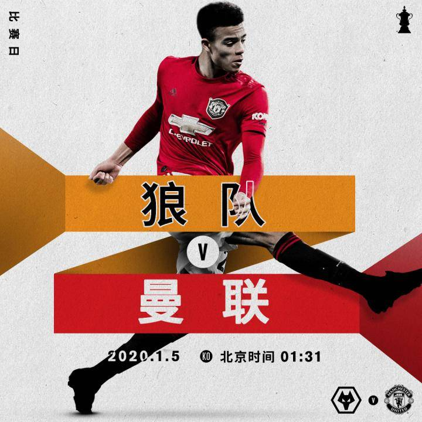
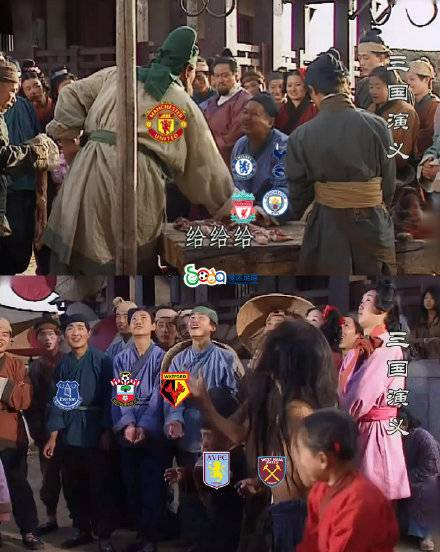
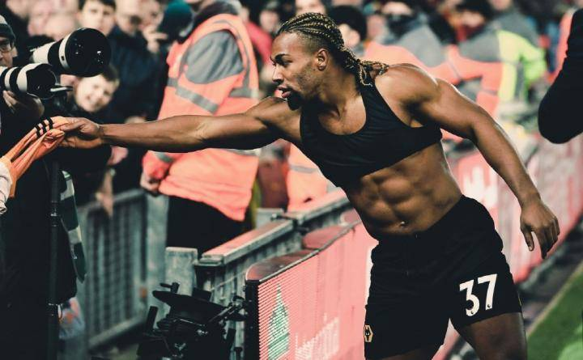
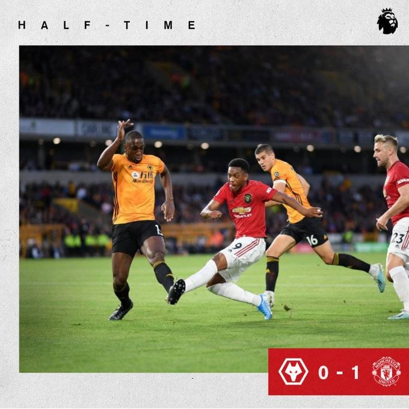
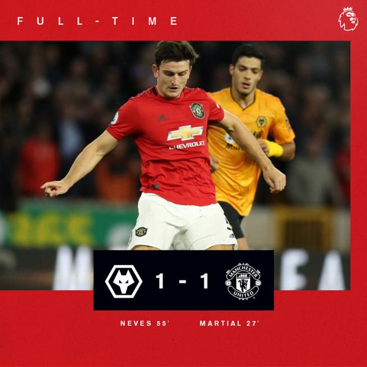

各位懂球帝们，大家新年好！没有英超可看极度无聊的山哥又来了。还好今晚有足总杯第三轮，本着看热闹不嫌事大的心理，山哥十分期待有小球会上演淘汰豪门的精彩戏码。当然，更多球迷想看的恐怕就是狼队VS曼联这场英超争四球队间的直接对话了。今天山哥从两队三点的同和不同之处来做一番比较分析。

No.1 相同的特质，劫富济贫。有意无意间，两队在英超联赛里面对强队，都扮演了豪门杀手的角色。上个赛季的狼队在英超和足总杯赛中13次面对Big6的比赛里，取得了6胜4平3负的傲人战绩。本赛季的曼联更猛，踢到21轮才刚刚输给枪手而结束了对Big6的不败战绩。而面对弱队则经常发挥失常，频频送分，这也是两队处于欧联区无法再进一步的根本原因。造成这种现象的最重要因素可能就是两队同样面临多线作战的处境。

No.2 相同的处境，多线作战。
本赛季两队同样面临多线作战。到现在又都是联赛争四有望，欧联晋级淘汰赛，足总杯这样的比赛也没出局。略有不同的是时隔39年重返欧洲赛场的狼队可能更希望在欧联杯上取得突破，这也是他们在对阵利物浦这样的比赛中选择雪藏特劳雷等主力的原因。而主打青春牌的曼联则任何一条线都不想轻易放弃，赛季未过半队中主力伤了不少。表现也是起起伏伏。

No.3 同样一套班底打天下，板凳深度决定球队上限。 其实这条紧接上一条，第一次打欧联的狼队为了满足多线作战的需求，在夏天引进了登东克尔和库特罗内这样的强援。但显然他们还是低估了多线作战对板凳深度的要求。结果在欧联杯（包括资格赛）里砍瓜切菜，到联赛里难求一胜，到第7轮才取胜沃特福德。紧接着联赛里又是4轮不胜，英联杯也输给了维拉，直到欧联杯第4轮赢了布拉迪斯拉发出线形势明朗。才又收心回来联赛，从第12轮到第21轮取得了5胜2平3负的不俗战绩。然而这中间的阵容变化则极少，球队也损失了博利这样的后防中坚。从阵容深度上讲，主打3后卫的狼队在防线上并没有多少可以轮换的空间。前锋位置也是如此，希门尼斯这样的关键人物根本经不起任何的受伤风险。

这也是他们选择在对阵利物浦这样的强队时不再像去季那样全力以赴而是选择主力轮歇。这边厢，选择“我全都要”的曼联这边在主力受伤后则坚持小幅度轮换，不少小将都获得了代表球队首次出场的机会，像格林伍德这种新星也拿出了不俗的表现。
但在联赛赛场上除了第1轮4比0赢切尔西，第6轮1比0斩莱斯特城外则彻底沦为鱼腩。前11轮就赢了这两场，中间还输给了纽卡斯尔这样保级区里的球队。好在知耻而后勇的曼联在欧联杯告一段落之后终于走上了正轨。整个12月份的7轮联赛中，取得了4胜2平1负的傲人战绩，中间更是斩杀曼城、热刺这样的强敌，也以4比1的比分复仇喜鹊成功。这固然少不了马夏尔这样的大将伤愈复出带来的利好，队中弗雷德这样的新援状态复苏也是关键。这也是山哥最看好曼联的一点，即阵容更有深度和挖潜的空间。更何况那位因养伤期间跳舞而惹恼主帅的世界第一身价还没出战呢！
最后，分析下本场比赛两队的发挥吧。从战略上讲，面对足总杯这样的比赛，两队没有任何资格轻言放弃。何况上轮联赛里刚刚失利的两队也急需一场胜利提振士气。从战术上讲，曼联后腰位置在失去了两个主力后元气大伤，在上轮比赛里弗雷德在面对拉卡泽特和扎卡时出尽洋相，出球能力也极度欠缺。而进攻线上在马夏尔被对方掐死之后，整个2019年30轮英超比赛没进球的林加德能提供的帮助实在有限。

此场对阵凶悍的狼队，其实两队都状态不佳，看好一场平局。比分预测2:2，别那么无聊对得起熬夜看球的球迷就行了。交换主场再来一局！红魔们，走起？